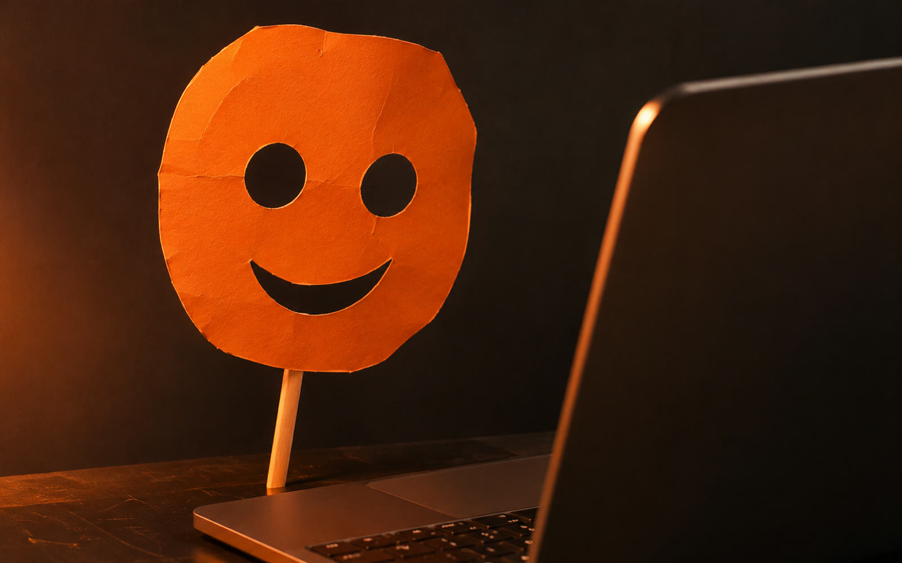
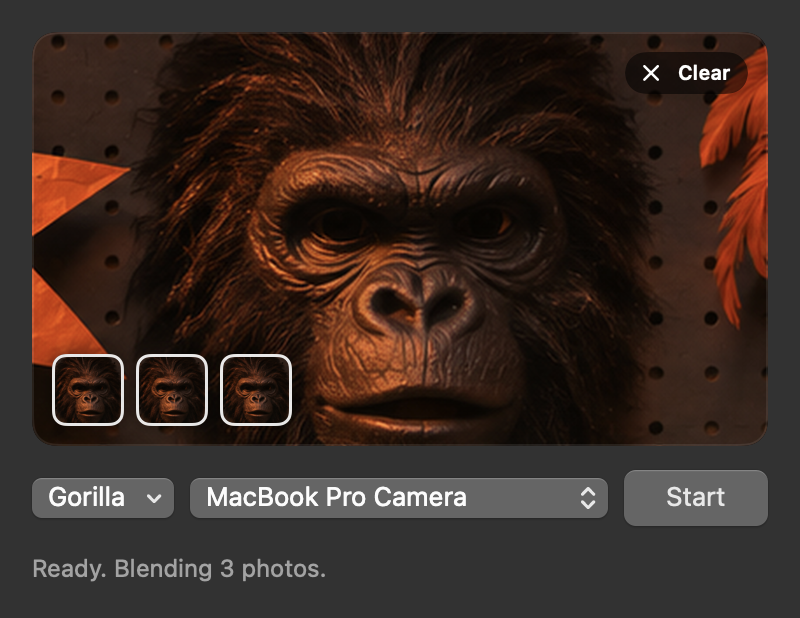
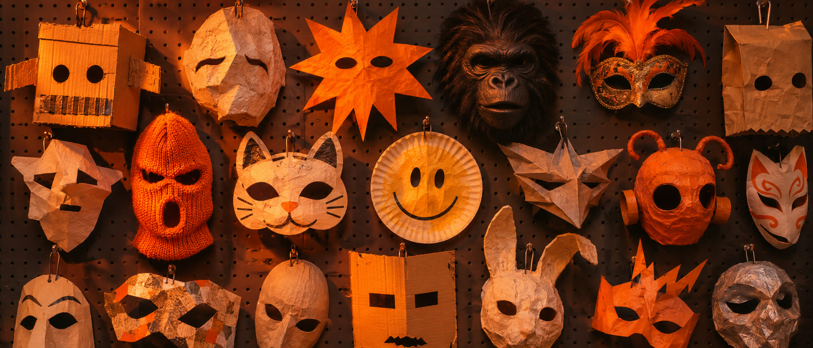

Wear any face on Discord.
Drop in a photo of anyone, press Start, and your webcam shows their face instead of yours, live, while you talk. Free, and it all runs on your own computer.
Mac with Apple silicon on macOS 14 or later. Windows 10 or 11, 64-bit. Setup downloads about 1.5 GB once.

LiveThree moves and you're someone else.
The first time you open Facecam it walks you through setup. After that it's this:
Drop a face photo into the window
Drag one straight out of your browser, or click to pick a file. Drop three to five photos of the same person and Facecam blends them for a closer match.
Press Start
Facecam shows you as you are until then. Press Start and their face scans onto yours, live; press Stop and it scans back off. It holds steady in a dim room, and new photos scan across without stopping.
In Discord, choose OBS Virtual Camera
It's under User Settings, Voice & Video, Camera. Zoom, Meet and FaceTime see it too.


Installing it
Both installers set up everything Facecam needs, including OBS, which provides the camera Discord sees. Neither is signed by Apple or Microsoft, so your computer will warn you once. Here's how to get past it.
Easiest: one line in Terminal
No security warnings this way. Open Terminal (press ⌘ Space and type Terminal), paste this, and press Return:
curl -fsSL https://raw.githubusercontent.com/AUstnnnnnn/facecam/main/mac/install.sh | shIt puts Facecam in Applications and opens it.
Or with the download
- Open Facecam.dmg and drag Facecam into Applications.
- Open Facecam. macOS says it can't check it for malware. Click Done.
- Go to System Settings, Privacy & Security, scroll down, and click Open Anyway next to Facecam.
- Follow the three setup steps in the app. When macOS says a system extension was blocked, the app tells you where to switch it on.
Run the installer
- Download Facecam-Setup.exe and open it.
- If Windows says it protected your PC, click More info, then Run anyway.
- Let it run. The first install takes a few minutes. If OBS asks for permission to install, say yes.
- Open Facecam from the Start menu.
Updating and removing
To update, run a newer Facecam-Setup.exe. It skips anything already installed, so it only takes a moment.
To remove it, use Settings, Apps. That also deletes your saved photos and presets. No admin rights needed for any of it.
If something's off
Most problems are another app holding the camera.
Discord shows a black screen or my normal face
Start Facecam before you turn your camera on in Discord, then set Discord's camera to OBS Virtual Camera. If Discord grabbed your real webcam first, quit Discord fully (it hides in the menu bar or system tray), press Start in Facecam, then reopen Discord.
"Camera didn't open"
Only one app can use the webcam at a time. Quit whatever has it (usually Discord, Zoom or a browser tab), then press Start again. On Windows, Facecam names the app when Windows tells it which one.
"OBS Virtual Camera isn't set up yet"
MacClick Set Up in Facecam. When macOS says a system extension was blocked, open System Settings, go to General, Login Items & Extensions, Camera Extensions, and switch on OBS. Quit OBS and press Start.
WindowsOpen OBS once, click Start Virtual Camera, close OBS, and press Start in Facecam.
It's slow or the face flickers
Put a light in front of you. Darker rooms make tracking work harder. Older computers top out around 10 to 15 frames a second, and Intel Macs aren't supported.
Setup stopped partway
Check your connection and try again. Setup picks up where it stopped. If it keeps failing, send me the log:
Mac~/Library/Logs/Facecam-setup.log (the app's Show Log button opens it)
Windowsinstall.log in %LOCALAPPDATA%\Programs\Facecam
Removing Facecam from a Mac
Drag Facecam from Applications to the Trash, then delete the folder ~/Library/Application Support/Facecam. That's where the engine, models and your saved faces live. OBS stays installed; remove it the same way if you don't want it.